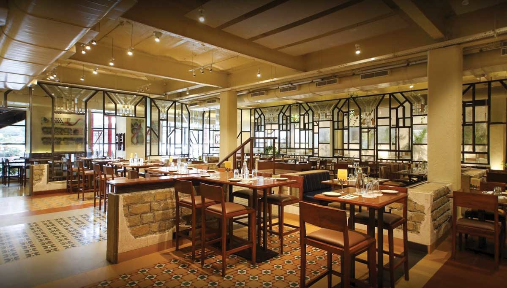

Best of best fine dine standalone restaurants in India
The Bombay Canteen, Mumbai

Simplicity takes the cake! This maxim is absolutely true for the beauty and the old-world 'Bombay-feeling' that lies in the simple interiors of The Bombay Canteen. The behind-the-scene reality or to the secret ingredients that goes into each and every dish are the local indigenously grown vegetables. Chef Floyd Cardoz along with Chef Thomas Zacharias bring to the table bright, delicious and unselfconsciously inventive cooking that has the ability to save your soul.
The Table, Mumbai
'Farm-to-table' and 'ingredients-driven' is how you can describe one of India's celebrated restaurants, The Table. This chic quaint bistro flaunts a casual yet chic setting; its easy-going and friendly vibe is unmistakable. The market-fresh, globally-inspired fusion menu, most of which was designed by former San Francisco Chef Alex Sanchez, changes daily and does everything in its power to satisfy your cravings for a curry-free evening out.
Cecconi's, Soho House, Mumbai
Who doesn't like a classic Italian dish! When you meld the soulful flavours of trattoria (read Italian restaurant) with the vibe of posh Mumbai, what you get is Cecconi's Mumbai, a modern-day classic Italian restaurant with an uninterrupted, al-fresco view of Juhu beach within the tony Soho House. The menu balances staunchly classic Italian recipes with fresh ingredients and offers a decent variety of dishes. The glamorous L-shaped marble bar indoors provides a perfect setting for aspirational Instagrammers.
Hakassan, Mumbai
Serving modern Cantonese cuisine with seamless service, Hakkasan has been identified as one of the finest restaurants by connoisseurs worldwide. With hints of Chinoiserie decadence, hushed lighting and soul tingling menu, Hakkasan transports guests to an exotic, faraway place. It offers exquisite dining experiences with its chefs, cuisine, design and ingredients selected and sourced from around the world. Yet, China remains at the heart of it all. This combination of high-end design, modern techniques, Chinese influences and Michelin-starred cuisine is a revelation.
Indian Accent, New Delhi
Indian Accent showcases inventive Indian cuisine by complementing the flavours and traditions of the country with global ingredients and techniques. Indian Accent, showcasing old-world hospitality, is one of the few restaurants to have iteration in New York and has been featured in the World's 50 Best Restaurants 2019. Chef Manish Mehrotra has designed Indian Accent's path-breaking contemporary Indian menu by combining fresh seasonal produce and unusual ingredients from across the world.
Olive Qutub, New Delhi

Olive Qutub is a hideaway where good food, laughter, culture and conversation come together in a delightful melting pot. Worlds collide and time stops in this Mogul mansion-turned-alfresco Mediterranean restaurant with a stunning, star-lit, and a tree-top terrace bar, under the shadow of the Qutub Minar. This classic by restaurateur AD Singh is headlined by Chef Dhruv Oberoi, who has been trained by the culinary God Chef Ferran Adria himself. The restaurant has dishes drawn from some of the best world culinary cultures.
Artusi Ristorante, New Delhi
If you have a taste for authentic Italian cuisine, then head to a fine dining restaurant and e-bar that serves a menu that will take you on an inspiring culinary journey. The single-minded objective of the owners and the chef, who hail from Emilia Romagna region of Northeastern Italy, is is to serve the very best of Italian food. The food is entirely authentic and offers guests a feel of home-made Italian cuisine. Artusi Ristorante sports a rustic look, in keeping with restaurants back in Italy.
Toast & Tonic, Bengaluru
Toast & Tonic blends French, Asian, Italian, American and even Latin American influences. While both the food and drinks served at the restaurant draws from the world cuisine, they are also influenced by India. It is in a way an expression of what made the East Village the quintessentially bohemian neighbourhood of the world. A meal here is comforting and yet gastronomically curious, the food — artisan inspired to modern. Adding spark to Bengaluru's nightlife scenario, Toast and Tonic showcases brilliantly done wooden interiors created by lovely colorful lights, giving the place a stunning modern look.
Sly Granny, Bengaluru
Sly Granny is a fresh breath of flavours, serving up European-meets-Asian cuisine. The fine dine community house will satiate both your stomach and your eyes with its eclectic but enchanting design. The Granny outlet has a tapas dining room, a lounge room and the original granny terrace; there are so many aspects to Sly Granny that it will take you a few visits to discover it all. Chef Varun Pereira has carefully crafted European and tapas menus and the bar holds every barmy beverage you could possibly imagine.
Olive Beach, Bengaluru
The elegant old villa transforms itself into a stunning venue with an incredible alfresco lounge bar and a spacious yet intimate dining space. Olive Beach retains its heritage and charm, yet presents a fabulous offering. The menu is curated by Manu Chandra, one of India's best-known chefs with a delicious selection of cocktails and a robust wine list. For a leisurely alfresco lunch in the sun-dappled courtyard, a romantic dinner for two under the stars, or a raucous evening with friends at the striking alfresco bar, Olive Beach has it all.